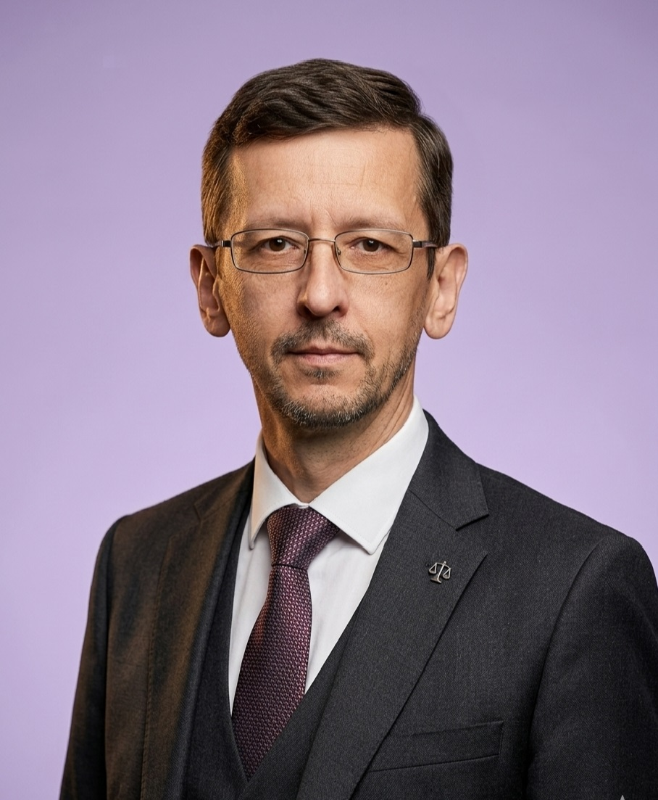

Семейные споры
Расторжение брака, раздел имущества и долгов, алименты, определение места жительства ребёнка, порядок общения, установление и оспаривание отцовства, лишение и ограничение родительских прав.
Обсудить задачу ?Правовой анализ ситуации, оценка рисков и судебных перспектив, подготовка документов и представительство. Вникаю в обстоятельства дела и объясняю возможные варианты без обещаний гарантированного результата.
Личная работа с доверителем · Конфиденциальность · Понятные условия сотрудничества

Можно обратиться как за отдельным документом или правовым заключением, так и за сопровождением вопроса на нескольких этапах.
Расторжение брака, раздел имущества и долгов, алименты, определение места жительства ребёнка, порядок общения, установление и оспаривание отцовства, лишение и ограничение родительских прав.
Обсудить задачу ?Восстановление срока принятия наследства, установление факта принятия, признание права собственности, споры между наследниками, обязательная доля, оспаривание завещаний.
Обсудить задачу ?Споры о праве собственности и пользовании жильём, долевая собственность, границы участков, аренда и выкуп земли, сделки с недвижимостью, защита интересов собственников.
Обсудить задачу ?Взносы и задолженность, решения общих собраний, электроснабжение и инфраструктура, отношения с управляющими организациями, начисления ЖКХ и споры о коммунальных услугах.
Обсудить задачу ?Возврат денег за некачественные товары и услуги, нарушение сроков выполнения работ, недостатки строительства и ремонта, неустойка, убытки, компенсация морального вреда.
Обсудить задачу ?Подготовка и проверка договоров, анализ условий и правовых рисков, взыскание задолженности, расторжение и изменение договоров, претензионная работа.
Обсудить задачу ?Подготовка исков, отзывов, возражений и ходатайств; формирование правовой позиции; участие в судах общей юрисдикции и арбитражных судах в пределах компетенции и договорённостей.
Обсудить задачу ?Отмена судебных приказов, возражения и обжалование судебных актов, вопросы взыскания и исполнения, взаимодействие с ФССП, анализ действий судебного пристава.
Обсудить задачу ?Незаконное увольнение, невыплата заработной платы и компенсаций, изменение условий труда, дисциплинарные взыскания, подготовка обращений и документов.
Обсудить задачу ?До начала работы важно понять не только, что можно сделать, но и какие существуют ограничения, риски и расходы.
Вы рассказываете обстоятельства и формулируете, какого результата хотите добиться.
Проверяю факты, документы, применимые нормы и возможные возражения другой стороны.
Обсуждаем варианты действий, перспективы, сроки, стоимость и возможные риски.
Готовлю документы, веду переговоры или представляю интересы в согласованном объёме.
«Хорошая правовая позиция начинается не с громких слов, а с внимательного изучения обстоятельств и документов».Подход к юридической работе
Меня зовут Павел Викторович. Я практикующий юрист в Калининграде. В работе для меня важны точность, последовательность и честный разговор о перспективах.
Не предлагаю универсальных решений до изучения ситуации. Сначала разбираюсь в документах и фактах, затем объясняю возможные правовые механизмы и предлагаю план действий.
Работаю с частными лицами и организациями. Возможны разовые консультации, подготовка отдельных документов, правовая экспертиза и комплексное сопровождение.
Коротко о том, как можно начать работу и чего ожидать от первой встречи.
Да. На первой консультации можно изложить ситуацию, задать вопросы и определить, какие документы необходимы для более предметного анализа. Если без изучения документов вывод сделать нельзя, это будет обозначено отдельно.
Нет. Первичное обсуждение возможно дистанционно. Документы можно предварительно направить в электронном виде, а формат дальнейшей работы согласовать отдельно.
Нет. Итог спора зависит от обстоятельств, доказательств, применимого законодательства и оценки суда. Задача юриста — выстроить обоснованную правовую позицию, своевременно совершить необходимые действия и объяснить риски.
В предусмотренных законом случаях судебные расходы на представителя могут быть взысканы с другой стороны. Вопрос решается судом с учётом документального подтверждения расходов, разумности их размера и обстоятельств дела. Полное возмещение не гарантируется.
Да, часть юридических задач можно решать дистанционно: анализ документов, подготовка процессуальных и иных документов, консультации. Возможность личного участия в конкретном деле обсуждается отдельно.
Стоимость зависит от сложности вопроса, объёма документов, срочности и необходимого объёма работы. После предварительного обсуждения можно определить состав поручения и согласовать цену до его начала.
Позвоните или напишите на электронную почту. Я уточню обстоятельства и скажу, какие документы стоит подготовить для первичного анализа.
Первичное обращение не означает автоматического заключения договора или принятия поручения.